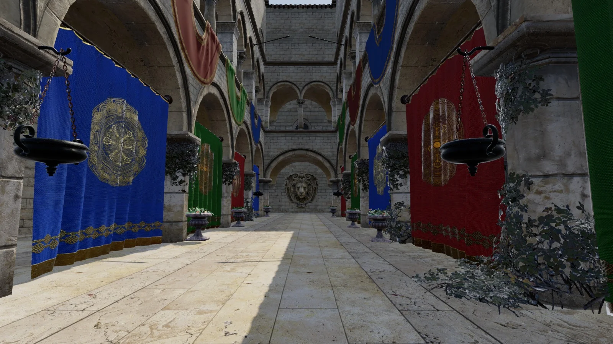

GitHub
API reference
npm
How it's made
Loading…
This browser has no WebGPU.
Winding draws with WebGPU, which Chrome, Edge and other Chromium browsers have on desktop and Android, and Safari and Firefox are bringing in. Here is what the scenes look like:
